에너지관리기사 (2009-03-01 기출문제)
1과목: 연소공학
1. 질량 조성비가 탄소 60%, 질소 13%, 황 0.8%, 수분 5%, 수소 8.6%, 산소 5%, 회분 7.6%인 고체연료 5kg을 공기비 1.1로 완전연소시키고자 할 때의 실제공기량은 약 몇 Nm3인가?
- 9.6
- 41.2
- 48.4
- 75.5
(정답률: 65%)

2. 연소로에서의 흡출(吸出)통풍에 대한 설명으로 옳지 않은 것은?
- 로안은 항시 부압(-)으로 유지된다.
- 흡출기로 배기가스를 방출하므로 연돌의 높이에 관계없이 연소할 수 있다.
- 고온가스에 의한 송풍기의 재질이 견딜 수 있어야 한다.
- 가열 연소용 공기를 사용하며 경제적이다.
(정답률: 56%)
3. 보일러 등의 연소장치에서 질소산화물(NOx)의 생성을 억제할 수 있는 연소 방법이 아닌 것은?
- 2단 연소
- 저산소(저공기비) 연소
- 배기의 재순환 연소
- 연소용 공기의 고온 예열
(정답률: 90%)
4. 다음 중 액체연료가 갖는 일반적인 특징이 아닌 것은?
- 연소온도가 높기 때문에 국부과열을 일으키기 쉽다.
- 발열량은 높지만 품질이 일정하지 않다.
- 화재, 역화 등의 위험이 크다.
- 연소할 때 소음이 발생한다.
(정답률: 73%)
5. 프로판(C3H8) 5Nm3를 이론산소량으로 완전연소시켰을 때 건연소가스량(Nm3)은?
- 5
- 10
- 15
- 20
(정답률: 82%)
6. 분젠 버너를 사용할 때 가스의 유출 속도를 점차 빠르게 하면 불꽃 모양은 어떻게 되는가?
- 불꽃이 엉클어지면서 짧아진다
- 불꽃이 엉클어지면서 길어진다.
- 불꽃의 형태는 변화없고 밝아진다.
- 매연을 발생하면서 연소한다.
(정답률: 92%)
7. 연소가스 부피조성이 CO2 13%, O2 8%, N2 79%일 때 공기과잉계수(공기비)는?
- 1.2
- 1.4
- 1.6
- 1.8
(정답률: 75%)
8. 액체연료의 유동점은 응고점보다 몇 ℃ 높은가?
- 1.5
- 2.0
- 2.5
- 3.0
(정답률: 64%)
9. 보일러의 열정산시 출열에 해당하지 않는 것은?
- 연소배가스 중 수증기의 보유열
- 건연소배가스의 현열
- 불완전연소에 의한 손실열
- 급수의 현열
(정답률: 86%)
10. 탄소 84%, 수소 13%, 유황 2%의 조성으로 되어 있는 경유의 이론공기량은 약 몇 Nm3/kg인가?
- 8
- 9
- 10
- 11
(정답률: 61%)
11. 원소 분석결과 C, S와 연소가스분석으로 (CO2)max를 알고 있을 때의 건연소가스량(G)을 구하는 식은?
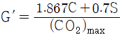
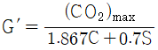
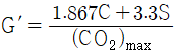
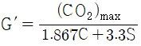
(정답률: 81%)
12. 다음 연료 중 단위 중량당 발열량이 가장 높은 것은?
- LPG
- 무연탄
- LNG
- 중유
(정답률: 61%)
13. 열기관이 135kW의 출력으로 10시간 운전하여 390kg의 연료를 소비하였다. 연료의 발열량을 40MJ/kg이라고 할 때 기관으로부터 방출된 열량은 약 몇 MJ인가?
- 4860
- 10740
- 15600
- 20460
(정답률: 54%)
14. 부탄의 연소반응에 대한 설명으로 틀린 것은?
- 부탄 1kg을 연소시키기 위해서는 2.51Nm3의 산소가 필요하다.
- 부탄을 완전 연소시키기 위해서는 질량으로 6.5배의 산소가 필요하다.
- 부탄 1m3를 연소시키면 4m3의 탄산가스가 발생한다.
- 부탄과 산소의 질량의 합은 탄산가스와 수증기의 질량의 합과 같다.
(정답률: 86%)
15. 연료의 연소시 CO2max(%)는 어느 때의 값인가?
- 이론공기량으로 연소시
- 실제공기량으로 연소시
- 과잉공기량으로 연소시
- 이론양보다 적은 공기량으로 연소시
(정답률: 85%)
16. 95% 효율을 가진 집진장치계통을 요구하는 어느 공장에서 35% 효율을 가진 전처리 장치를 이미 설치하였다. 주처리 장치는 몇 % 효율을 가진 것이어야 하는가?
- 60.00
- 85.76
- 92.31
- 95.45
(정답률: 73%)
17. 가연성 온합기의 공기비(또는 공기과잉률)가 1.0일 때 당량비는 얼마인가?
- 0
- 0.5
- 1.0
- 1.5
(정답률: 87%)
18. 체적이 0.3m3인 용기 안에 메탄(CH4)과 공기 혼합물이 들어있다. 공기는 메탄을 연소시키는데 필요한 이론 공기량보다 20%가 더 들어 있고, 연소 전 용기의 압력은 300kPa, 온도는 90℃이다. 연소 전 용기 안에 있는 메탄의 질량은 약 몇 g인가?
- 27.6
- 33.7
- 38.4
- 42.1
(정답률: 51%)
19. 프로판가스 1Nm3를 공기과잉률 1.1로 완전 연소시켰을 때의 건연소가스량은 약 몇 Nm3인가?
- 14.9
- 18.6
- 24.2
- 29.4
(정답률: 63%)
20. 산소 1m3를 이용하려면 공기 몇 m3가 필요한가?
- 1.9
- 2.8
- 3.7
- 4.8
(정답률: 70%)
2과목: 열역학
21. 물 1kg이 50℃의 포화액 상태로부터 동일 압력에서 건포화증기로 증발할 때까지 2280kJ을 흡수하였다. 이 때 엔트로피의 증가는 몇 kJ/K인가?
- 7.06
- 15.3
- 22.3
- 47.6
(정답률: 52%)
22. 스로틀링(throttling) 밸브를 이용하여 Joule-Thomson 효과를 보고자 한다. 이 때 압력이 감소함에 따라 온도가 감소하는 경우는 Joule-Thomson 계수 μ가 어떤 값을 가질 때인가?
- μ = 0
- μ ＞ 0
- μ ＜ 0
- μ = -1
(정답률: 79%)
23. 실제기체의 거동이 이상기체 법칙으로 표현될 수 있는 상태는?
- 압력이 낮고 온도가 임계온도 이상인 상태
- 압력과 온도가 모두 낮은 상태
- 압력은 임계압력 이상이고 온도가 낮은 상태
- 압력과 온도가 모두 임계점 이상인 상태
(정답률: 75%)
24. 다음 중 가스터빈의 사이클로 가장 많이 사용되는 사이클은?
- 오토 사이클
- 디젤 사이클
- 랭킨 사이클
- 브레이턴 사이클
(정답률: 72%)
25. 1기압 30℃의 물 2kg을 1기압 건포화 증기로 만들려면 약 몇 kJ의 열량을 가하여야 하는가? (단, 30℃와 100℃ 사이의 물의 평균 정압비열은 4.19 kJ/kgㆍK, 1기압 100℃에서의 증발잠열은 2257 kJ/kg, 1기압 30℃ 물의 엔탈피는 126 kJ/kg이다.)
- 2250
- 4510
- 5100
- 9460
(정답률: 54%)
26. 열기관의 효율을 면적의 비로 표시할 수 있는 선도는?
- H-S 선도
- T-S 선도
- T-V 선도
- P-T 선도
(정답률: 66%)
27. 가열량 및 압축비가 같을 경우 사이클의 효율이 큰 것부터 작은 순서대로 옳게 나타낸 것은?
- 오토사이클＞디젤사이클＞사바테사이클
- 사바테사이클＞오토사이클＞디젤사이클
- 디젤사이클＞오토사이클＞사바테사이클
- 오토사이클＞사바테사이클＞디젤사이클
(정답률: 80%)
28. 다음 중 보일러 열정산에서 입열 항목이 아닌 것은?
- 연료의 보유 열량
- 연소용 공기의 현열
- 냉각수의 보유 현열량
- 발열 반응에 의한 반응열
(정답률: 50%)
29. 이상 및 실제 사이클 과정 중 항상 성립하는 것은? (단, Q는 시스템에 가해지는 열량, T는 절대온도이다.)
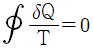
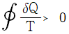
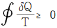
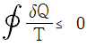
(정답률: 57%)
30. 온도 30℃, 압력 350kPa에서 비체적이 0.449m3/kg인 이상기체의 기체 상수는 몇 kJ/kgㆍK인가?
- 0.143
- 0.287
- 0.518
- 2.077
(정답률: 63%)
31. 전체적이 5660L일 때 산소 4.54kg, 질소 6.80kg, 수소 2.27kg로 이루어지는 기체 혼합물 60℃에서의 전압은 약 몇 kPa인가? (단, 분자량은 산소 32, 질소 28, 수소 2이고 이상기체 혼합물이라 가정한다.)
- 134
- 268
- 743
- 6655
(정답률: 49%)
32. 열역학 제2법칙과 관계가 가장 먼 것은?
- 열은 온도가 높은 곳에서 낮은 곳으로 흐른다.
- 전열선에 전기를 가하면 열이 나지만 전열선을 가열 하여도 전력을 얻을 수 없다.
- 열기관의 효율에 대한 이론적인 한계를 결정한다.
- 전체 에너지양은 항상 보존된다.
(정답률: 82%)
33. 다음 중 절탄기에 관한 설명으로 옳은 것은?
- 석탄의 절약을 목적으로 하는 부속장치이다.
- 연도 가스의 열로 급수를 예열하는 장치이다.
- 연도 가스의 열로 고온의 공기를 만드는 장치이다.
- 연도 가스의 열로 고온의 증기를 만드는 장치이다.
(정답률: 79%)
34. 그림과 같은 T-S 선도를 갖는 사이클은?
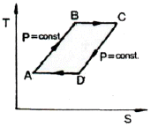
- Brayton 사이클
- Ericsson 사이클
- Carnot 사이클
- Stirling 사이클
(정답률: 62%)
35. 어느 기체가 압력이 500kPa일 때의 체적이 50L 였다. 이 기체의 압력을 2배로 증가시키면 체적은 몇 L인가? (단, 온도는 일정한 상태이다.)
- 100
- 50
- 25
- 12.5
(정답률: 66%)
36. 다음은 열역학적 사이클에서 일어나는 여러 가지의 과정이다. 이상적인 카르노(Carnot) 사이클에서 일어나는 과정을 옳게 나열한 것은?
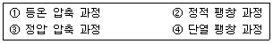
- ①, ②
- ②, ③
- ③, ④
- ①, ④
(정답률: 78%)
37. 이상적인 증기압축식 냉동장치에서 압축기 입구를 1, 응축기 입구를 2, 팽창팰브 입구를 3, 증발기 입구를 4로 나타낼 때 T-S 선도(수직축 T, 수평축 S)에서 수직선으로 나타나는 과정은?
- 1-2
- 2-3
- 3-4
- 4-1
(정답률: 52%)
38. 이상적인 사이클로서 카르노(Carnot)사이클에 관한 설명으로 옳은 것은?
- 효율이 카르노사이클보다 더 높은 사이클이 있다.
- 과정 중에 등엔트로피 과정이 있다.
- 카르노사이클은 외부에서 열을 받고 일을 하지만 열을 방출하지는 않는다.
- 외부와의 열교환 과정은 유한 온도차에 의한 열전달을 통해 이루어진다.
(정답률: 63%)
39. 폐쇄계에서 경로 A→C→B를 따라 100J 의 열이 계로 들어오고 40의 일을 외부에 할 경우 B→D→A를 따라 계가 되돌아 올 때 계가 30J의 일을 받는다면 이 과정에서 계는 얼마의 열을 방출 또는 흡수하는가?
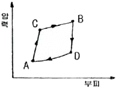
- 30J 흡수
- 30J 방출
- 90J 흡수
- 90J 방출
(정답률: 65%)
40. 가역 과정에서 열역학적 비유동계 에너지의 일반식은?
- δQ=dU+PV
- δQ=dU-PV
- δQ=dU+PdV
- δQ=dU-PdV
(정답률: 74%)
3과목: 계측방법
41. 탱크의 액위를 제어하는 방법으로 주로 이용되며 뱅뱅제어라고도 하는 것은?
- PD 동작
- PI 동작
- P 동작
- 온ㆍ오프 동작
(정답률: 76%)
42. 방사고온계는 다음 중 어느 이론을 응용한 것인가?
- 제백 효과
- 필터 효과
- 스테판-블쯔만의 법칙
- 윈-프랑크의 법칙
(정답률: 75%)
43. 고체의 열팽창계수가 다른 특성을 응용한 온도계는?
- 백금 저항 온도계
- 열전쌍 온도계
- 광학 온도계
- 바이메탈 온도계
(정답률: 62%)
44. 전자(電磁)유량계로 유량을 구하기 위해서 직접 계측하는 것은?
- 유체 내에 생기는 자속(磁束)
- 유체에 생기는 과전류(過電流)에 의한 온도상승
- 유체에 생기는 압력상승
- 유체에 생기는 기전력
(정답률: 70%)
45. 부표(float)와 관의 단면적 차이를 이용하여 측정하는 면적식 유량계는?
- 오리피스미터
- 피토관
- 벤투리미터
- 로터미터
(정답률: 66%)
46. 방사온도계의 특징에 대한 설명으로 옳은 것은?
- 측정대상의 온도에 영향이 크다.
- 이동물체에 대한 온도측정이 가능하다.
- 저온도에 대한 측정에 적합하다.
- 응답속도가 느리다.
(정답률: 73%)
47. 열전대 보호관 중 다공질로서 급냉, 급열에 강하며 방사온도계용 단망관, 2중 보호관의 외관으로 주로 사용되는 것은?
- 카보런덤관
- 자기관
- 석영관
- 황동관
(정답률: 77%)
48. 제어장치 중 기본 압력과 검출부 출력의 차를 조작부에 신호로 전하는 부분은?
- 조절부
- 검출부
- 비교부
- 제어부
(정답률: 82%)
49. 표준대기압 760mmHg을 SI 단위로 변환하면 몇 kPa인가?
- 1.0132
- 10.132
- 101.32
- 1013.2
(정답률: 89%)
50. 석유화학, 화약공장과 같은 화기의 위험성이 있는 곳에 사용되며 신뢰성이 높은 입력신호 전송방식은?
- 공기압식
- 유압식
- 전기식
- 유압식과 전기식의 결합방식
(정답률: 85%)
51. 가스크로마토그래피의 특징에 대한 설명으로 옳지 않은 것은?
- 1대의 장치로는 여러 가지 가스를 분석할 수 없다.
- 미량성분의 분석이 가능하다.
- 분리성능이 좋고 선택성이 우수하다.
- 응답속도가 다소 느리고 동일한 가스의 연속측정이 불가능하다.
(정답률: 70%)
52. 가스미터의 표준기로도 이용되는 가스미터의 형식은?
- 오벌(oval)형
- 드럼(drum)형
- 다이어프램(diaphragm)형
- 로터리 피스톤(rotary piston)형
(정답률: 53%)
53. 수위(水位)의 역응답(逆應答)에 대한 설명 중 틀린 것은?
- 증기유량이 증가하면 수위가 약강 상승하는 현상
- 증기유량이 감소하면 수위가 약강 하강하는 현상
- 보일러 물 속에 점유하고 있는 기포의 체적변화에 의해 발생하는 현상
- 프라이밍(priming)이나 포오밍(forming)에 의해 발생하는 현상
(정답률: 71%)
54. 다음 중 정상편차(offset) 현상이 발생하는 제어동작은?
- 온-오프(on-off)의 2위치 동작
- 비례동작(P동작)
- 비례적분동작(PI동작)
- 비례적분미분동작(PID동작)
(정답률: 53%)
55. 열선식 유량계에 대한 설명으로 틀린 것은?
- 열선의 전기저항이 감소하는 것을 이용한 유량계를 열선풍속계라 한다.
- 유체가 필요로 하는 열량이 유체의 양에 비례하는 것을 이용한 유량계는 토마스식 유량계이다.
- 기체의 종류가 바뀌거나 조성이 변해도 정도가 높다.
- 기체의 질량유량을 직접 측정이 가능하다.
(정답률: 58%)
56. 다음 중 가장 높은 압력을 측정할 수 있는 압력계는?
- 부르돈관(bourdon tube)압력계
- 다이어프램(diaphragm)압력계
- 벨로우즈(bellows)압력계
- 링 벨런스(ring balance)압력계
(정답률: 63%)
57. 단요소식(單要素式) 수위제어에 대한 설명으로 옳은 것은?
- 발전용 고압 대용량 보일러의 수위제어에 사용된다.
- 보일러의 수위만을 검출하여 급수량을 조절하는 방식이다.
- 수위조절기의 제어동작에는 PID 동작이 채용된다.
- 부하 변동에 의한 수위의 변화 폭이 아주 적다.
(정답률: 84%)
58. 수은 압력계를 사용하여 어떤 탱크 내의 압력을 측정한 결과 압력계의 눈금 차가 800mmHg 이었다. 만일 대기압이 750mmHg라면 실제 탱크 내의 압력은 몇 mmHg인가?
- 50
- 750
- 800
- 1550
(정답률: 58%)
59. 다음 중 가장 높은 온도의 측정에 사용되는 열전대의 형식은?
- T형
- K형
- R형
- J형
(정답률: 53%)
60. 열전대(thermocouple)의 구비조건으로 틀린 것은?
- 열전도율이 작을 것
- 전기저항과 온도계수가 클 것
- 기계적 강도가 크고 내열성, 내식성이 있을 것
- 온도상승에 따른 열기전력이 클 것
(정답률: 67%)
4과목: 열설비재료 및 관계법규
61. 다음 중 내화모르타르의 분류에 속하지 않는 것은?
- 열경성
- 화경성
- 기경성
- 수경성
(정답률: 60%)
62. 스폴링(spalling)의 발생원인으로 가장 거리가 먼 것은?
- 온도 급변에 의한 열응력
- 로재의 불순 성분 함유
- 화학적 슬래그 등에 의한 부식
- 장력이나 전단력에 의한 내화벽돌의 강도 저하
(정답률: 48%)
63. 상온(20℃)에서 공기의 열전도율은 몇 kcal/mh℃ 인가?
- 0.022
- 0.22
- 0.⑤5
- 0.55
(정답률: 59%)
64. 에너지이용합리화법에서 정한 에너지관리기준이란?
- 에너지다소비사업자가 에너지관리 현황에 대한 조사에 필요한 기준
- 에너지다소비자사업자가 에너지를 효율적으로 관리하기 위하여 필요한 기준
- 에너지다소비사업자가 에너지 사용량 및 제품 생산량에 맞게 에너지를 소비하도록 만든 기준
- 에너지다소비사업자가 에너지관리 진단 결과 손실요인을 줄이기 위해 필요한 기준
(정답률: 69%)
65. 열사용 기자재의 정의에 대한 내용이 아닌 것은?
- 연료를 사용하는 기기
- 열을 사용하는 기기
- 열을 단열하는 자재 및 축열식 전기기기
- 폐열 회수장치 및 전열장치
(정답률: 56%)
66. 다음 중 유기질 보온재가 아닌 것은?
- 우모펠트
- 우레탄폼
- 암면
- 탄화콜크
(정답률: 56%)
67. 국가에너지절약추진위원회는 위원장을 포함하여 몇 명으로 구성되는가?
- 10인 이내
- 15인 이내
- 20인 이내
- 25인 이내
(정답률: 65%)
68. 에너지 저장의무를 부과할 수 있는 대상자가 아닌 자는?
- 전기사업법에 의한 전기사업자
- 도시가스사업법에 의한 도시가스사업자
- 풍력사업법에 의한 풍력사업자
- 석탄산업법에 의한 석탄가공업자
(정답률: 78%)
69. 지식경제부장관은 에너지이용합리화를 위하여 필요하다고 인정하는 경우에는 효율관리기자재로 정하여 고시할 수 있다. 효율관리기자재가 아닌 것은? (단, 지식경제부장관이 그 효율의 향상이 특히 필요하다고 인정하여 고시하는 기자재 및 설비는 제외한다.)
- 전기냉방기
- 전기세탁기
- 백열전구
- 전자레인지
(정답률: 57%)
70. 용접검사가 면제되는 대상기기가 아닌 것은?
- 용접이음이 없는 강관을 동체로 한 헤더
- 최고사용압력이 0.3MPa이고 동체의 안지름이 580mm인 전열교환식 1종 압력용기
- 전열면적이 5.9m2이고, 최고사용압력이 0.5MPa인 강철제보일러
- 전열면적이 16.9m2이고, 최고사용압력이 0.3MPa인 온수보일러
(정답률: 56%)
71. 에너지다소비사업자의 연간에너지 사용량의 기준은?
- 1천 디오이 이상인 자
- 2천 디오이 이상인 자
- 3천 디오이 이상인 자
- 5천 디오이 이상인 자
(정답률: 89%)
72. 용선로(cupola)에 대한 설명으로 틀린 것은?
- 대량생산이 가능하다.
- 용해 특성상 용탕에 탄소, 황, 인 등의 불순물이 들어가기 쉽다.
- 동합금, 경합금 등 비철금속 용해로로 주로 사용된다.
- 다른 용해로에 비해 열효율이 좋고 용해시간이 빠르다.
(정답률: 58%)
73. 볼밸브(ball valve)의 특징에 대한 설명으로 틀린 것은?
- 유로가 배관과 같은 형상으로 유체의 저항이 적다.
- 밸브의 개폐가 쉽고 조작이 간편하여 자동조작밸브로 활용된다.
- 이음쇠 구조가 없기 때문에 설치공간이 작아도 되고 보수가 쉽다.
- 밸브대가 90° 회전하므로 패킹과의 원주방향 움직임이 크기 땝문에 기밀성이 약하다.
(정답률: 77%)
74. 연속 가열로를 강제의 이동방식에 따라 분류할 때 이에 해당되지 않는 것은?
- 전기 저항식
- 회전 노상식
- 푸셔(Pusher)식
- 워킹ㆍ빔(Walking beam)식
(정답률: 52%)
75. 요로(窯爐)의 정의를 설명한 것으로 가장 적절한 것은?
- 물을 가열하여 수증기를 만드는 장치이다.
- 열을 이용하여 물체를 가열시켜 소성 또는 용융시키는 공업적 장치이다.
- 금속을 녹이는 장치이다.
- 도자기를 굽는 장치이다.
(정답률: 89%)
76. 보온재의 열전도율에 대한 설명으로 옳은 것은?
- 열전도율이 클수록 좋은 보온재이다.
- 온도에 관계없이 일정하다.
- 온도가 높아질수록 작아진다.
- 온도가 높아질수록 커진다.
(정답률: 54%)
77. 마그네시아 벽돌에 대한 설명으로 틀린 것은?
- 마그네사이트 또는 수산화마그네슘을 주원료로 한다.
- 산성벽돌로서 비중과 열전도율이 크다.
- 열팽창성이 크며 스폴링이 약하다.
- 1500℃ 이상으로 가열하여 소성한다.
(정답률: 59%)
78. 다음 중 열사용가자재에 해당되는 축열식 전기보일러는?
- 정격소비전력이 50kW 이하이며 최고사용압력이 0.35MPa 이하인 것
- 정격소비전력이 30kW 이하이며 최고사용압력이 0.35MPa 이하인 것
- 정격소비전력이 50kW 이하이며 최고사용압력이 0.5MPa 이하인 것
- 정격소비전력이 30kW 이하이며 최고사용압력이 0.5MPa 이하인 것
(정답률: 44%)
79. 열사용기자재 중 2종 압력용기의 적용범위로 옳은 것은?
- 최고사용압력이 0.1MPa를 초과하는 기체보유 용기로서 내용적이 0.⑤m3 이상인 것
- 최고사용압력이 0.2MPa를 초과하는 기체보유 용기로서 내용적이 0.04m3 이상인 것
- 최고사용압력이 0.3MPa를 초과하는 기체보유 용기로서 내용적이 0.03m3 이상인 것
- 최고사용압력이 0.4MPa를 초과하는 기체보유 용기로서 내용적이 0.02m3 이상인 것
(정답률: 63%)
80. 입형보일러의 특징에 대한 설명으로 틀린 것은?
- 구조가 간단하고 튼튼하다.
- 설치장소가 좁아도 된다.
- 습증기가 발생하지 않는다.
- 전열면적이 작고 소용량이다.
(정답률: 64%)
5과목: 열설비설계
81. 열정산에 대한 설명으로 틀린 것은?
- 원칙적으로 정격부하 이상에서 정상상태로 적어도 2시간 이상의 운전결과에 따른다.
- 발열량은 원칙적으로 사용시 원료의 고발열량으로 한다.
- 최대출열량을 시험할 경우에는 반드시 최대부하에서 시험을 한다.
- 증기의 건도는 98% 이상인 경우에 시험함을 원칙으로 한다.
(정답률: 73%)
82. 육용강제 보일러에 있어서 접시모양 경판으로 노통을 설치 할 경우, 경판의 최소 두께 t(mm)를 구하는 식은? (단, P : 최고 사용압력(kgf/cm2), R : 접시모양 경판의 중앙부에서의 내면 반지름(mm), σa : 재료의 허용 인장응력(kgf/mm2), η : 경판자체의 이음 효율, A : 부식여유(mm))
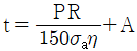
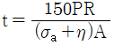
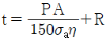
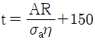
(정답률: 81%)
83. 맞대기 용접이음에서 하중 120kg, 용접부의 길이 3cm, 판의 두께를 2mm라 할 때 용접부의 인장응력은 몇 kg/mm2인가?
- 0.5
- 2
- 20
- 50
(정답률: 62%)
84. 최고 사용압력이 7kgf/cm2인 증기용 강제보일러의 수압시험 압력은 몇 kgf/cm2으로 하여야 하는가?
- 10
- 10.5
- 12.1
- 14
(정답률: 50%)
85. 육용강제 보일러에서 동체의 최소 두께에 대하여 옳지 않게 나타낸 것은?
- 안지름이 900mm 이하의 것은 6mm (단, 스테이를 부착할 경우)
- 안지름이 900mm 초과 1350mm 이하의 것은 8mm
- 안지름이 1350mm 초과 1850mm 이하의 것은 10mm
- 안지름이 1850mm 초과시 12mm
(정답률: 86%)
86. 강판의 두께가 20mm이고, 리벳의 직경이 28.2mm이며 피치 50.1mm의 1줄 겹치기 리벳조인트가 있다. 이 강판의 효율은 몇 % 인가?
- 34.2
- 43.7
- 61.4
- 70.1
(정답률: 60%)
87. 어느 병류열교환기에서 그림과 같이 고온 유체가 90℃로 들어가 50℃로 나오고 이와 열교환되는 유체는 20℃에서 40℃까지 가열되었다. 열관류율이 50kcal/m2h℃이고, 시간당 전열량이 8000kcal 일 때 열교환기의 전열면적은 약 몇 m2인가?
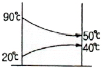
- 5.2
- 6.2
- 7.2
- 8.2
(정답률: 60%)
88. 보일러의 리벳이음시 양쪽이음매 판의 최소 두께를 구하는 식으로 옳은 것은? (단, to는 양쪽이음매판의 최소두께(mm), t는 드럼판의 두께(mm)이다.)
- to=0.1t+2
- to=0.6t+2
- to=0.1t+10
- to=0.6t+10
(정답률: 66%)
89. 오염저항 및 저유량에서 심한 난류 등이 유발되는 곳에 사용되고 큰 열팽창을 감쇠시킬 수 있으며 열전달율이 크고 고형물이 함유된 유체나 고점도 유체에 사용이 적합 한 판형 열교환기는?
- 플레이트식
- 플레이트핀식
- 스파이럴형
- 케틀형
(정답률: 57%)
90. 태양열 보일러가 800W/m2의 비율로 열을 흡수한다. 열효율이 9%인 장치로 12kW의 동력을 얻으려면 전열 면적의 최소 크기는 몇 m2인가?
- 0.17
- 16.6
- 17.8
- 166.7
(정답률: 49%)
91. 노통연관 보일러의 노통의 바깥면과 이에 가장 가까운 연관과의 사이에는 몇 mm이상의 틈새를 두어야 하는가?
- 10
- 20
- 30
- 50
(정답률: 66%)
92. 이온교환수지 재생에서의 재생방법으로 적합한 것은?
- 양이온교환수지는 가성소다, 암모니아로 재생한다.
- 양이온교환수지는 소금 또는 염화수소, 황산으로 재생한다.
- 음이온교환수지는 소금 또는 황산으로 재생한다.
- 음이온교환수지는 암모니아 또는 황산으로 재생한다.
(정답률: 69%)
93. 증발량 2ton/h, 최고 사용압력 10kg/cm2, 급수온도 20℃ 최대 증발율 25kg/m2ㆍh인 원통 보일러에서 평균 증발율을 최대 증방률의 90%로 할 때 평균 증발량(kg/h)은?
- 1200
- 1500
- 1800
- 2100
(정답률: 67%)
94. 방열 유체의 전열유니트수(NTU)가 3.5, 온도차가 1⑤℃이고, 열교환기의 전열효율이 1인 LMTD(℃)는?
- 0.03
- 22.03
- 30
- 62
(정답률: 69%)
95. 압력 10kg/cm2의 포화수가 증기트랩으로부터 대기압으로 방출될 때, 포화수 1kg당 몇 kg의 증기가 발생하는가? (단 10kg/cm2의 포화온도는 179℃, 760mmHg에서 즞ㅇ발열은 539kcal/kg이다.)
- 0.015
- 0.147
- 0.25
- 2.5
(정답률: 48%)
96. 스케일(관석)에 대한 설명으로 틀린 것은?
- 규산칼슘, 황산칼슘이 주성분이다.
- 관석의 연전도도는 아주 높아 각종 부작용을 일으킨다.
- 배기가스의 온도를 높인다.
- 전열면의 국부과열현상을 일으킨다.
(정답률: 44%)
97. 보일러형식에 따른 분류 중 원통형보일러에 해당하지 않는 것은?
- 관류보일러
- 노통보일러
- 직립형보일러
- 노통연관식보일러
(정답률: 65%)
98. 고온부식의 방지대책이 아닌 것은?
- 중유 중의 황성분을 제거한다.
- 연소가스의 온도를 낮게 한다.
- 고온의 전열면에 보호피막을 씌운다.
- 고온이 전열면에 내식재료를 사용한다.
(정답률: 79%)
99. 고압 증기터빈에서 팽창되어 압력이 저하된 증기를 가열하는 보일러의 부속장치는?
- 재열기
- 과열기
- 절단기
- 공기예열기
(정답률: 60%)
100. 온수발생보일러에서 안전밸브를 설치해야 할 운전 온도는 얼마인가?
- 100℃ 초과
- 110℃ 초과
- 120℃ 초과
- 130℃ 초과
(정답률: 82%)
C0.6H0.086N0.13S0.008O0.⑤ + 0.9(O2 + 3.76N2) → 0.6CO2 + 0.043H2O + 0.13NOx + 0.008SOx + 0.⑤O2 + 3.76×0.9N2
여기서 CO2, H2O, NOx, SOx, O2은 모두 기체이므로 이들의 부피는 공기와 같습니다. 따라서, 실제 공기량은 다음과 같이 계산할 수 있습니다.
실제 공기량 = 이론적 공기량 / 공기비 = (0.6×22.4 + 0.043×22.4 + 0.13×22.4 + 0.008×22.4 + 0.⑤×22.4 + 3.76×0.9×22.4) / 1.1 = 41.2 Nm3
따라서, 정답은 "41.2"입니다.